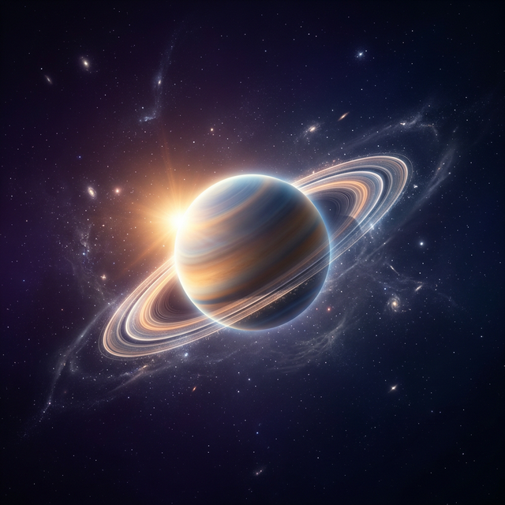

🎲 Descubrimiento Infinito
Toca el botón principal para recibir al instante un nuevo descubrimiento fascinante del universo. El saber no tiene límites.
Explora datos curiosos sobre ciencia, historia y naturaleza con una interfaz inspirada en los planetas del sistema solar.

Toca el botón principal para recibir al instante un nuevo descubrimiento fascinante del universo. El saber no tiene límites.
Mantén pulsado el botón de mezclar para filtrar por Ciencia, Historia, Animales, Espacio, Tecnología o Deportes — o déjalo en Todas para máxima sorpresa.
Temas dinámicos desde el Sol hasta Plutón, cada uno con su propio ciclo animado de día/noche e iconografía minimalista.
Contenido traducido automáticamente con tecnología de Apple. Aparecerá un globo si hay traducción para volver al texto original.
Curiosity recuerda lo que ya has visto, asegurando un flujo constante de nuevas maravillas cada vez que abres la app.
Mantén presionado cualquier dato para guardarlo. Accede a tus maravillas galácticas favoritas cuando quieras, incluso offline.
Caché inteligente y buffer híbrido para una carga instantánea. No esperes nunca para que el universo revele sus secretos.
Copia cualquier descubrimiento con un solo toque para compartir el asombro con amigos y familiares al instante.
Lleva el universo a tu pantalla de inicio con un widget que te permite mezclar datos y acceder a tus favoritos.
Personaliza tu pantalla de inicio con 11 variaciones de iconos de la app para que coincidan con tu planeta favorito.
Si tienes problemas con la aplicación, quieres reportar un error o simplemente tienes una sugerencia, estamos aquí para escucharte.
Contactar SoporteGeneralmente respondemos en menos de 24 horas.